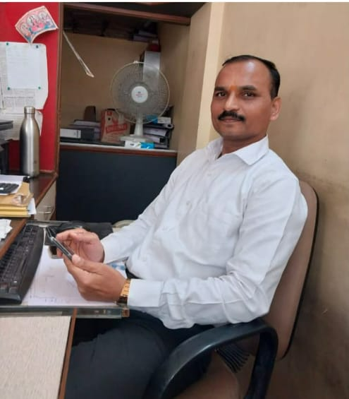

Annual Society Audit
Complete statutory audit of society accounts as required under the Maharashtra Cooperative Societies Act — income, expenses, maintenance collections, and fund utilization.
Professional Auditor for Housing Societies & Manager,
Janakalyan Pathsanstha, Vishrantwadi
Accurate audits, transparent financial reporting, and reliable society management — helping housing societies stay compliant, accountable, and financially healthy.

I am Satish Pawar, a dedicated auditor specializing in housing and cooperative societies across Pune. With deep knowledge of Maharashtra Cooperative Societies Act provisions and society bye-laws, I help managing committees maintain clear accounts and meet statutory requirements.
Beyond auditing, I serve as the Manager of Janakalyan Pathsanstha, Vishrantwadi — bringing hands-on experience in day-to-day society operations, member relations, and financial administration.
Whether your society needs an annual audit, internal review, or guidance on compliance matters, I offer dependable, transparent service built on trust and professional standards.
Society Auditor & Manager
Comprehensive auditing and advisory services tailored for housing societies, cooperative societies, and their managing committees.
Complete statutory audit of society accounts as required under the Maharashtra Cooperative Societies Act — income, expenses, maintenance collections, and fund utilization.
Detailed examination of balance sheets, receipts & payments, bank reconciliations, and member ledger accounts with clear audit observations.
Guidance on society bye-laws, AGM requirements, audit timelines, and regulatory compliance to avoid penalties and disputes.
Periodic internal checks for societies wanting proactive financial oversight beyond the mandatory annual audit.
Audit reports prepared in a format suitable for presentation at Annual General Meetings, with explanations for committee and members.
Practical advice on maintenance billing, fund management, vendor payments, and operational best practices from active management experience.
As Manager of Janakalyan Pathsanstha in Vishrantwadi, Pune, I oversee the day-to-day administration of the society — ensuring smooth operations, transparent accounting, and responsive service to members.
This role gives me real-world insight into the challenges housing societies face every day. When I audit other societies, I bring not just technical knowledge but practical understanding of how societies actually run.
Vishrantwadi, Pune, Maharashtra
Honest feedback from managing committees and members who have worked with me for audits and society financial management.
Our AGM was coming up and we were worried about the accounts. Satish sir came, checked everything properly — maintenance collection, expenses, bank passbook — and gave us a clear report. Members understood everything. No confusion, no tension.
What I liked most is he explains things in simple language. We are not all from accounts background, but he sat with our committee and showed where the gaps were and how to fix them. Very patient, very professional.
We changed our auditor last year and appointed Satish Pawar sir. Best decision. Audit was done on time, all vouchers were verified, and the report was ready before our deadline. Committee members were very satisfied.
Honest work. No shortcuts. He found some old pending entries in our ledger that we had missed for years. Did not hide anything — explained it properly in the audit report. That is the kind of auditor every society needs.
As members of Janakalyan Pathsanstha, we see his work every day. Accounts are maintained neatly, queries are answered quickly, and meetings run smoothly. He genuinely cares about the society — not just audit season work.
Phone call lagte hi respond karte hain. Our society is small — only 32 flats — but he gave us the same attention as a big society. Maintenance audit, sinking fund, everything was checked properly. Highly recommend for Pune societies.
Every audit is conducted with honesty and independence. Your society's financial truth matters above all.
Active society management means I understand real operational challenges, not just textbook rules.
Audit findings explained in plain language so committees and members can act on them confidently.
Based in Vishrantwadi, Pune — accessible, responsive, and familiar with local society requirements.
Discuss your society's needs, size, and audit requirements.
Collect and examine accounts, registers, bank statements, and vouchers.
Thorough examination with on-site verification where needed.
Clear audit report ready for AGM and regulatory submission.
Looking for a reliable society auditor in Pune? Whether you need an annual audit or ongoing financial guidance, I'd be happy to discuss how I can help your society.